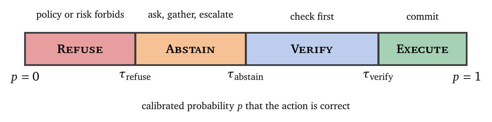
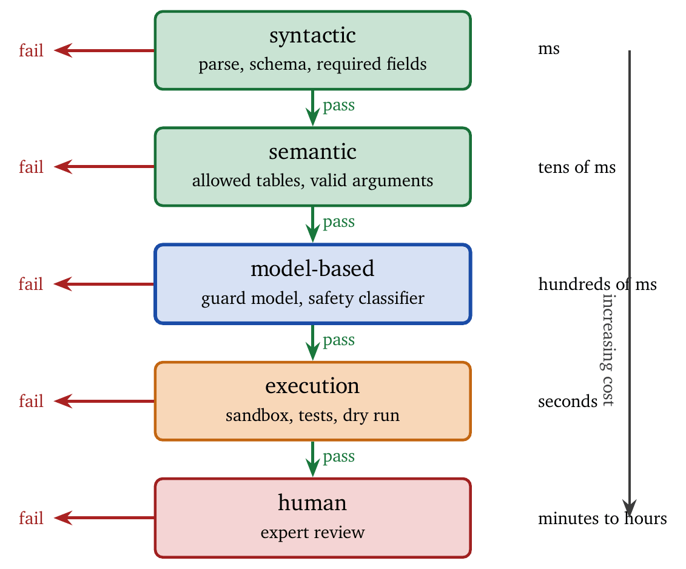
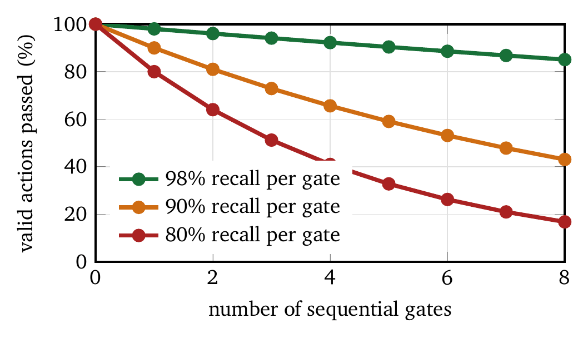

« Speculation, Parallelism, and Commit Protocols | Contents | Memory, State, and Forgetting »
Part II: Control and CommitmentChapter 9. Risk-Aware Gates: Verification, Abstention, Refusal
A gate is the last moment at which a bad action is still cheap. Everything before it is proposal, and proposals cost nothing beyond the computation that produced them. Everything after it is consequence, billed at whatever the world charges. An agent without gates has no such moment: generation flows directly into side effects, and the only remaining defense is that the model happens to be right. It usually is. This chapter is about the rest of the time.
We develop the theory and algorithms of gates. We formalize the four outcomes (execute, verify, abstain, refuse), derive threshold conditions for each, present algorithms for gate decisions, and analyze the cost–benefit trade-offs that determine an optimal gate policy. The treatment draws on decision theory, classification with rejection, and systems verification, and unifies these traditions into a single framework for agent control.
9.1 The Gate Abstraction
A gate is a function from an action and its context to a decision: \[\text{Gate}: (\text{Action}, \text{Context}) \rightarrow \{\textsc{Execute}, \textsc{Verify}, \textsc{Abstain}, \textsc{Refuse}\}.\]
To be operationally meaningful, a gate must satisfy two properties.
Property 1 (Commit separation). The system distinguishes proposal from commit. The agent may propose actions freely, and only the gate can authorize commitment. This ensures that generation cannot directly produce side effects.
Property 2 (Cost grounding). Gate decisions are tunable through explicit costs: error costs, verification costs, delay costs, escalation costs. A gate whose threshold cannot be moved by changing those numbers is an opinionated filter in the clothing of a control mechanism. The test is to ask what would have to change for the gate to decide otherwise. If the answer is “someone edits the prompt,” it is not a gate.
The four outcomes have distinct semantics. Execute commits the action immediately; the gate has determined that risk is acceptable and verification unnecessary, and this is the default when confidence is high and stakes are low. Verify runs additional checks before committing; verification consumes time, tokens, or money and reduces the error probability, and the gate has determined that confidence is insufficient while the action is likely acceptable after checking. Abstain defers: the agent declines to execute while leaving the door open, which is the right outcome when information is thin, the request is ambiguous, or a human should weigh in; the agent can ask a clarifying question, gather evidence, or escalate. Refuse rejects the action permanently; the gate has determined that the action should not execute under any circumstances because it violates policy, exceeds capability bounds, or poses unacceptable risk, and additional evidence cannot change the outcome.
Abstention is the outcome teams implement last and need most. It is also the one agents are worst at reaching on their own. Evaluated specifically on whether they know when not to act under ambiguity, conflicting instructions, and missing preconditions, agents largely do not [18]. That result is the argument for deriving the decision outside the model.
Action types and side effects.
The gate should reason over an action-type taxonomy, because costs and verification methods differ by type. Read-only actions (retrieval, summarization, report generation) have correctness and confidentiality as their main costs. Write actions (database updates, ticket creation, notification dispatch) have irreversible side effects as their main cost. Privileged actions (credential use, access-control changes, system commands) have security impact as their main cost. The same confidence value \(p\) should map to different outcomes across these types, because the cost ratio changes.
Context features.
Let \(x\) denote the context supplied to the gate. Operationally, \(x\) includes user-intent signals (the prompt, recent turns, explicit constraints), system state (environment, permissions, tool availability, rate limits), action metadata (action type, target resource, estimated blast radius), and uncertainty signals (log-probability proxies, self-consistency scores, verifier disagreement). A gate that does not ingest action metadata and system state will be brittle, since it will treat high-risk and low-risk actions alike.
9.1.1 Gate Placement
Gates can be placed at several points in the pipeline. A pre-generation gate runs before the agent generates a proposal and filters inputs that should not be processed at all, such as a request that violates content policy. A post-generation gate runs after the agent proposes an action and before execution, and evaluates the specific proposal, for instance by checking a generated SQL query for safety. A pre-commit gate runs after speculative execution and before results become permanent, and evaluates actual results against acceptance criteria, as when generated code is reviewed against test results before merging. A post-commit gate runs after commitment, for monitoring and potential rollback, and detects problems that escaped earlier gates.
| Gate position | User input | Proposed action | Execution result | Commit status |
|---|---|---|---|---|
| Pre-generation | ✓ | — | — | — |
| Post-generation | ✓ | ✓ | — | — |
| Pre-commit | ✓ | ✓ | ✓ | — |
| Post-commit | ✓ | ✓ | ✓ | ✓ |
Earlier gates prevent wasted computation; later gates catch errors that escaped earlier checks. The trade is precision against cost: pre-generation gates operate on ambiguous inputs, while post-commit gates operate on concrete outcomes after resources have been spent. Certain guarantees are meaningful only at certain placements. A pre-generation gate can enforce policy invariants on inputs and cannot validate a tool call that has not yet been formed. A post-generation gate can enforce static correctness (schema, syntax, constraints) on the concrete proposal. A pre-commit gate can enforce semantic correctness against actual outcomes (tests, dry runs). A post-commit gate can enforce operational correctness (monitoring, rollback), and only with compensating actions.
9.1.2 Gate Costs
Each outcome carries a cost:
| Outcome | Direct cost | Opportunity cost |
|---|---|---|
| Execute | Action execution cost | Error cost if wrong |
| Verify | Verification cost | Delay cost |
| Abstain | Escalation cost | Incomplete-task cost |
| Refuse | Zero | Lost value if the action was valid |
The goal of gate design is to minimize total expected cost, balancing the risk of errors against the cost of prevention. Costs are rarely scalar in practice. A useful operational model decomposes the error cost as \[c_e = c_{\text{impact}} \cdot c_{\text{recoverability}} \cdot c_{\text{blast-radius}},\] where impact is the severity of a wrong action, recoverability reflects rollback difficulty, and blast radius reflects scope (single user or fleet). This decomposition is how systems teams assign stricter gates to privileged actions.
9.2 Threshold Derivation
Gate decisions reduce to threshold comparisons, and the thresholds can be derived from decision theory, connecting to the classical literature on classification with rejection [4, 5].
9.2.1 The Binary Gate
Consider first a gate with two outcomes, execute or refuse. Let \(p\) be the probability that an action is correct (safe, appropriate, effective), \(c_e\) the cost of executing a bad action, and \(c_r\) the cost of refusing a good action. The expected cost of execution is \((1-p) \cdot c_e\), and the expected cost of refusal is \(p \cdot c_r\). Execution is preferred when \[(1-p) \cdot c_e < p \cdot c_r \quad \Longleftrightarrow \quad p > \frac{c_e}{c_e + c_r}.\] This is Chow’s rule [4]: execute when confidence exceeds the threshold \(\tau = c_e/(c_e + c_r)\). The threshold depends only on the ratio of the two costs.
As an example, if executing a bad action costs $100 and refusing a good one costs $10, the threshold is \(\tau = 100/110 \approx 0.91\), so the action executes only at 91% confidence or above. Two limiting cases show the behavior. When \(c_e \gg c_r\), \(\tau \rightarrow 1\) and the system becomes conservative, which is correct for destructive actions. When \(c_r \gg c_e\), \(\tau \rightarrow 0\) and the system executes almost always, which is correct for low-stakes suggestions. This is why a single global threshold is wrong: different action classes imply different cost ratios.
9.2.2 Adding Verification
Verification adds a third option. Let \(c_v\) be the verification cost, always paid, and \(\alpha\) the probability that verification correctly identifies a bad action. After verification the action executes only if verified safe, so the expected cost is \[\mathbb{E}[\text{cost} \mid \textsc{Verify}] = c_v + (1-p)(1-\alpha) \cdot c_e,\] where the second term captures bad actions that escape verification. Verification is preferred to immediate execution when \[c_v + (1-p)(1-\alpha) \cdot c_e < (1-p) \cdot c_e \quad \Longleftrightarrow \quad c_v < (1-p) \cdot \alpha \cdot c_e.\] Verification is worthwhile when its cost is less than the expected reduction in error cost. This defines a region of moderate confidence: high enough that outright refusal wastes value, low enough that immediate execution is risky.
Verification must also beat refusal. If refusing a good action costs \(c_r\), the condition is \[c_v + (1-p)(1-\alpha)c_e < p c_r,\] which defines the lower edge of the verification region; together with the previous inequality it bounds an interval of \(p\) in which verification is optimal.
The symbol \(\alpha\) hides two error modes. A verifier’s false negatives, bad actions that pass, drive the residual risk. Its false positives, good actions that fail verification, drive unnecessary refusal or abstention. When verification is automated (lint, schema, tests), both rates can be measured and improved. When it is model-based, both rates drift and require periodic recalibration.
9.2.3 Adding Abstention
Abstention (deferral, escalation) costs \(c_a\), which may include human review, delay, or the cost of an incomplete task. Unlike refusal, abstention may eventually lead to execution after more information is gathered. The optimal policy partitions the confidence axis into four regions, shown in Figure 9.1.

The thresholds depend on the cost structure: \[\begin{align*} \tau_{\text{refuse}} &= \frac{c_e}{c_e + c_r + c_a'}, \\ \tau_{\text{verify}} &= 1 - \frac{c_v}{\alpha \cdot c_e}, \end{align*}\] where \(c_a'\) is the effective abstention cost accounting for eventual resolution. A useful operational model makes \(c_a'\) explicit: \[c_a' = c_a + \Pr(\text{eventual failure} \mid \textsc{Abstain}) \cdot c_r + \Pr(\text{eventual wrong commit} \mid \textsc{Abstain}) \cdot c_e.\] Abstention is not free safety. It shifts work into escalation queues and may still end in a wrong decision, especially when humans rubber-stamp.
Abstention and verification are different mechanisms. Verification reduces error probability by checking the proposal; abstention reduces it by delaying commitment until more information exists. Confusing the two leads to poor designs such as “always ask the user to confirm,” which becomes unusable, or “always run a model judge,” which becomes expensive and remains brittle.
9.2.4 Calibration Requirements
These thresholds require calibrated confidence: a confidence of 0.9 should mean the action is correct 90% of the time. Modern language models are often overconfident, reporting high confidence when wrong [8]. Calibration techniques include temperature scaling (adjusting output logits by a learned scalar), Platt scaling (fitting a sigmoid from logits to probabilities), verbalized confidence (asking the model to state its confidence), and consistency checking (sampling several responses and measuring agreement). Post-trained models exhibit systematic overconfidence that temperature scaling does not fully correct [13]; combining verbalized confidence with consistency checking gives more reliable estimates than either alone.
One negative result should be absorbed before building on any of this. Entropy-based uncertainty, the most common signal in practice because it is free, is insufficient for safe selective prediction. It identifies low-confidence cases without identifying high-risk ones, and the two sets overlap less than one would hope [19]. A gate that abstains on high entropy will abstain on genuinely ambiguous and harmless queries while executing confident, wrong, expensive ones. The practical reading is that risk and uncertainty are different quantities: the gate needs an estimate of \(P(\text{error})\) and a cost model over what that error does. Chapter 7 needs the same calibrated quantity for cascade escalation, and a survey of uncertainty quantification for agents [23] is a reasonable entry point to the methods.
The gate also needs calibration conditional on action class. A model may be well calibrated on question answering and poorly calibrated on tool use. Maintain separate calibration maps for at least the read-only, write, and privileged classes, because the base error rates and failure modes differ.
A common failure is to use “the model says its confidence is 0.93” as \(p\). Prefer predictors derived from observable signals: agreement across \(k\) samples, constraint satisfaction rates (schema validity, type checks), historical error rates per tool and per action template, and verifier disagreement between a guard model and the generator. Verbalized confidence is one feature among these, and not the estimate itself.
9.3 Verification Strategies
When the gate selects Verify, which verification should run? The choice depends on the action type, the available resources, and the error characteristics.
9.3.1 Verification Taxonomy
| Verification type | Mechanism | Coverage |
|---|---|---|
| Syntactic | Pattern matching, parsing | Format errors |
| Semantic | Constraint checking | Logic errors |
| Execution | Sandbox testing | Runtime errors |
| Model-based | LLM review | Subjective errors |
| Human | Expert review | All error types |
Syntactic verification catches malformed outputs, such as JSON that does not parse, SQL that does not compile, or code with syntax errors. It runs in milliseconds and costs nothing in API calls, and it catches only surface errors. Semantic verification checks constraints: does this query touch only permitted tables, does this email address exist, does this function call use valid parameters? It requires domain knowledge encoded as rules or schemas. Execution verification runs the action in a sandbox and observes the result: do the tests pass, does the API call return valid data? It catches runtime errors and requires a safe execution environment. Model-based verification uses a language model to evaluate outputs; WildGuard [9] achieves 94.7% F1 on response-harmfulness detection and reduces jailbreak success from 79.8% to 2.4% when deployed as a filter, and LlamaGuard provides multi-turn safety classification across 14 risk categories, with both models lightweight (7B parameters) and fast. Human verification is the most complete and the most expensive, and it should be reserved for high-stakes decisions where automated verification is insufficient.
Verifier selection is part of the gate. “Verify” names a family of actions, and the gate must choose a verifier policy \(V = \text{SelectVerifier}(a, x)\) and then execute \(V(a, x)\) to obtain evidence. The choice depends on the failure mode (syntax, safety, or correctness), the risk (higher \(c_e\) justifies stronger verification), the budget (rate limits and latency), and the tool semantics (some tools support dry runs).
9.3.2 Verification Composition
Several verification stages can be composed into a cascade, ordered by cost, as Figure 9.2 shows: fast syntactic checks first (milliseconds), semantic constraint checks next (tens of milliseconds), model-based safety checks after that (hundreds of milliseconds), execution tests (seconds), and finally human review (minutes to hours).

Early stages should have high recall even at the cost of precision; later stages refine the decision with higher precision. The cascade minimizes expected verification cost while maintaining safety. Two rules govern the ordering: hard failures (parse errors, schema violations, missing parameters) go early, and soft failures (suspicious intent, borderline safety, ambiguous semantics) go late.
9.3.3 When the Verifier Is Wrong
Everything above treats verification as a source of truth. It is a classifier with its own error rates, and admitting that changes the arithmetic.
Consider the verify–repair loop that agents run constantly: propose, check, fix what the check flags, re-check. With a perfect verifier this converges. With a noisy verifier it can diverge, because a false positive sends the agent to repair something that was already correct, and repairs damage working outputs at a nonzero rate. Systematic study of noisy verify–repair loops shows this to be a real regime rather than a corner case, and shows that a robust stopping rule matters more than a better repairer [25].
The decision rule of Chapter 2 therefore needs a term. Naively, verification pays when \(c_v < \alpha \cdot c_e\), with \(\alpha\) the fraction of bad actions the verifier catches. Accounting for verifier error, \[c_v \;+\; \underbrace{\phi \cdot c_{\text{repair-damage}}}_{\text{false positives}} \;<\; \alpha \cdot c_e,\] where \(\phi\) is the verifier’s false-positive rate, the fraction of correct outputs it wrongly flags. Note that \(\phi\) is distinct from \(\alpha\): a verifier can be accurate at catching bad actions and still flag good ones often, and it is \(\phi\) that drives the repair loop. When \(\phi\) is high and the repair step is destructive, verification has negative value and the loop degrades the output. This is the analytic reason for a rule experienced teams reach by instinct: cap repair iterations, and prefer verifiers that abstain to verifiers that guess.
A related caution applies to model-based verification. Rubric-based scoring with a language-model judge, the usual implementation, has been shown to be unreliable in agentic settings where the object being judged is a trajectory rather than an answer [20]. Chapter 15 treats this at length; here it suffices to note that a model-based verifier inherits every failure mode of the model it verifies, including correlated ones. A generator and a verifier from the same family agree on the same mistakes.
9.3.4 Verifying Before Committing
The ordering matters as much as the checks. Verification that runs after commitment is monitoring, which is valuable and is a different thing. Self-auditing places the check between reasoning and action, testing whether the agent’s stated justification supports the action it is about to take [24]. This catches a failure that output-level checks miss entirely: coherent reasoning that violates an evidential constraint, producing a well-formed action justified by a belief the agent has no support for. Structurally this is the prepare phase of two-phase commit (Chapter 8) with the agent’s own reasoning as the participant being polled; the gate is the commit point, and the verifier’s evidence is the vote.
A minimal implementable gate can be written as follows. Compute the action class \(t \in \{\text{read}, \text{write}, \text{privileged}\}\) and the risk multiplier \(m(t)\). Compute the confidence estimate \(p\) and the calibrated risk cost \(c_e \leftarrow m(t) \cdot c_e\). If a policy invariant is violated, Refuse. Otherwise, if \(p \geq \tau_{\text{execute}}(t)\) and the action is reversible, Execute. Otherwise run the cascade \(V_1, V_2, \ldots\) until a verifier returns a hard fail (Refuse, or Abstain if human escalation is required), the verifiers produce sufficient evidence (Execute), or the budget or time is exhausted (Abstain, or Refuse in a fail-closed system). Nothing here is sophisticated. It is the baseline that avoids the “generate then execute” failure, and a surprising number of production systems do not clear it.
9.3.5 Verification Cost–Benefit
The value of verification depends on its accuracy and on the base error rate: \[\text{Value of verification} = (1-p) \cdot \alpha \cdot c_e - c_v.\] Verification is cost-effective when this is positive. For high-confidence actions (\(p\) near 1) it rarely catches anything and adds cost; for low-confidence actions (\(p\) near 0) refusal is cheaper. The useful region is moderate confidence, where errors are plausible and not certain.
Two operational refinements apply. Both \((1-p)\) and \(\alpha\) drift as prompts shift and tools change, so the gate must be monitored like any other production component. And verifiers are asymmetric: some mainly reduce \(c_e\) by preventing bad commits, such as a schema validator, while others mainly reduce \(c_r\) by preventing unnecessary refusal, and a human approval step reduces \(c_e\) while increasing \(c_r\) by delaying valid actions.
9.4 Abstention Theory
Abstention, the decision to neither execute nor refuse, is understudied in agent systems and well developed in machine learning as classification with rejection [10, 14].
9.4.1 When to Abstain
Abstention is appropriate when information is insufficient (the query is ambiguous, context is missing, or the task exceeds the agent’s knowledge), when the stakes exceed the agent’s reliable competence, when human values are at issue (decisions with moral, legal, or significant personal consequences), and when several valid interpretations exist and the agent cannot determine which the user intends.
SelectLLM [15] trains models to recognize their own uncertainty and abstain, achieving balanced coverage–utility trade-offs on medical and commonsense question answering. Abstention benefits from being a trained capability rather than a threshold attached to a confidence score. Two lines of recent work extend this. Verifiable reinforcement learning can produce calibrated abstention together with a useful post-refusal clarification, addressing the complaint that a refusal without a next step is worse than a guess [17]. And plug-and-play selective prediction, which augments a frozen model with a memory of past decisions rather than retraining it, extends abstention to open-set tasks where the answer space is not enumerable [22], which is the regime agents operate in.
For agents specifically, deferral can be framed at the level of the action rather than the answer: given a sequential decision problem, decide whether this step should be handed to a human or a stronger system [21]. That framing composes directly with the budget machinery of Chapter 7, since deferral has a price and competes for the same pool.
Abstention triggers for two different reasons, and the remedies differ. Under epistemic uncertainty the system does not know which answer is correct, and the remedy is escalation or retrieval. Under intent ambiguity several answers could be correct depending on what the user meant, and the remedy is a clarifying question. Treating both as “low confidence” leads to poor interaction design.
9.4.2 Abstention Mechanisms
Three mechanisms implement abstention. Confidence-based routing sends decisions below a threshold to human review; it is the simplest mechanism and requires calibrated confidence. Its binding constraint is the reviewer. Human oversight has finite capacity, and reviewers are neither perfectly available nor perfectly accurate; an approval gate calibrated without modelling reviewer fatigue will either saturate the queue or be rubber-stamped [26]. The escalation threshold should be set against measured reviewer throughput, and that throughput treated as a budget in the sense of Chapter 6. Explicit uncertainty expression trains the model to say “I don’t know” when appropriate; it requires training data with abstention labels and careful balancing against over- and under-abstention. Clarification requests ask the user for more information instead of abstaining silently, which maintains engagement while acknowledging a limitation.
A clarification mechanism should be bounded. A rule that works in practice: ask at most \(q_{\max}\) clarification questions (for instance two); require each question to reduce ambiguity over a fixed set of discrete options rather than being open-ended; and if ambiguity persists after \(q_{\max}\), escalate or refuse according to the risk. This prevents the failure in which the agent becomes a question generator.
9.4.3 Over-Abstention and Under-Abstention
Both failures are harmful. Over-abstention refuses helpful actions, frustrating users and reducing utility; OR-Bench [6] contains 80,000 benign prompts that current models incorrectly reject, and over-abstention often results from safety training that penalizes false negatives heavily without balancing false positives. Under-abstention executes actions that should have been deferred, and it is the more dangerous failure in high-stakes settings. The optimal abstention rate depends on the deployment: medical diagnosis warrants high abstention, casual conversation low.
Abstention should be measured on four quantities: coverage, the fraction of requests answered without abstaining; selective risk, the error rate on the answered subset; escalation load, the fraction of requests routed to humans; and user friction, the extra turns caused by abstention or clarification. A gate tuned only for safety will over-abstain; a gate tuned only for friction will under-abstain.
9.5 Coverage Across a Pipeline
Everything so far calibrates a single decision. An agent is a pipeline, and calibrating each stage independently gives no guarantee about the whole.
The naive repair is a union bound over stages, which is valid and badly conservative, widening intervals until abstention swallows the useful cases. Pipeline-aware split conformal prediction reduces joint coverage across \(K\) stages to a single conformal problem on the joint maximum nonconformity score, giving a finite-sample, distribution-free guarantee that all stages are simultaneously covered without paying the Bonferroni penalty [27].
For agents the relevant pipeline is planner, tool, critic. Errors compound across these stages, which is the compounding Chapter 14 describes when it notes that the step where an error surfaces is rarely the step that caused it. A joint coverage statement is the uncertainty-quantification counterpart of that observation. The cost is the usual one for conformal methods: a calibration set drawn from the deployment distribution, with guarantees that degrade as the distribution moves.
9.6 Refusal Policies
Refusal is the strongest gate outcome: permanent rejection regardless of additional evidence. Unlike abstention, it cannot be overridden by verification or human escalation. It represents a hard constraint.
9.6.1 Refusal Categories
Gates refuse actions in several categories. Policy violations are actions that violate explicit rules regardless of context: content policies, data-access restrictions, regulatory requirements. Capability boundaries are actions the agent cannot perform reliably, where admitting the limitation is better than attempting and failing. Safety hazards are actions with unacceptable risk regardless of potential benefit: physical harm, security exploits, privacy violations. Ethical constraints are actions that conflict with values even when technically feasible: deception, manipulation, discrimination.
Refusal should be auditable. A refusal without explanation is operationally expensive, since it creates support tickets and invites prompt manipulation, and the explanation must be careful: it should state the category (policy, capability, safety), it should not provide instructions that enable circumvention, and it should offer a safe alternative where one exists.
9.6.2 Refusal Implementation
Refusal training faces a basic tension. Models must learn to refuse harmful requests while remaining helpful for legitimate requests that superficially resemble them [11]. Current alignment approaches (RLHF, DPO) often produce shallow alignment: the model learns to generate refusal prefixes such as “I can’t help with that” without an understanding of why the request is harmful [12], and shallow alignment is vulnerable to jailbreaks that bypass the prefix. Safe RLHF [7] decouples helpfulness and harmlessness into separate reward and cost models, optimizing helpfulness subject to safety constraints; this Lagrangian formulation produces more robust refusals and requires careful constraint calibration.
A strong engineering pattern is objective separation: a generator model optimized for task completion, a guard model optimized for safety classification, and a gate that combines them under explicit costs. This prevents the generator from being both advocate and judge of its own output.
9.6.3 Refusal Consistency
Refusals should be consistent. If the agent refuses a request in one phrasing, it should refuse equivalent phrasings, and research shows troubling inconsistencies. Models refuse future-tense harmful requests (57% safe) and comply with past-tense equivalents (16% safe) [1]. Multilingual models show inconsistent refusal across languages. Fictional framing, role-play, and technical jargon can bypass refusals.
Robust refusal requires invariance to surface reformulation, and it must be tested with paraphrase sets: lexical paraphrases (synonyms, reordering), style paraphrases (role-play, hypothetical framing), language paraphrases (translation), and decomposition (splitting a malicious request into steps). If the refusal rate varies substantially across these sets, the refusal policy is matching patterns rather than checking invariants, and a determined user will find the phrasing that gets through.
9.7 Human-in-the-Loop Integration
Gates often route decisions to human operators. The integration must be designed to avoid bottlenecks and to ensure that the oversight is meaningful.
9.7.1 Escalation Patterns
Synchronous approval pauses the agent until a human approves. It provides maximum control at the cost of a delay per decision, and it suits irreversible actions: financial transactions, data deletion, system modifications. Asynchronous audit lets the agent execute immediately and logs decisions for later review, maintaining speed while accepting delayed error detection; it suits reversible actions with audit requirements. Confidence-based routing sends decisions below a threshold to humans and executes the rest automatically; the threshold should be derived from reviewer capacity rather than chosen as a round number, since an escalation rate exceeding what reviewers can absorb converts oversight into a formality [26]. Exception-based review has humans review only the anomalies detected by automated monitoring, which scales human attention to the decisions most likely to need it.
Human routing is a gate outcome rather than a fallback. If escalation is treated as the place where everything hard goes, the system will fail under load. Escalation must be budgeted as a finite resource and protected by thresholds that respond to queue conditions.
9.7.2 Human Review Quality
Reviewers are fallible. Under time pressure they rubber-stamp, and alert fatigue from excessive false positives degrades vigilance. Effective review requires clear decision criteria with examples, reasonable queue sizes, feedback loops connecting review decisions to system improvement, and audit trails for accountability. Human overrides should update the gate as well as the model: the calibration maps (reported \(p\) against observed correctness), the cost parameters (actual incident cost against assumed cost), and the verifier policies (which checks caught which failures). Otherwise the same classes of failure recur.
9.8 Gate Composition
Real systems compose several gates into pipelines, and the composition has effects of its own.
9.8.1 Sequential Gate Pipelines
When gates are arranged in sequence, each sees only the actions that passed the previous ones, so \[P(\text{Execute}) = P(\text{Pass}_1) \cdot P(\text{Pass}_2 \mid \text{Pass}_1) \cdots P(\text{Pass}_n \mid \text{Pass}_{1..n-1}).\] If each gate passes 90% of valid actions, a five-gate pipeline passes only \(0.9^5 \approx 59\%\) of them. Figure 9.3 shows how quickly the product falls. Gate pipelines should be designed to minimize false refusals while maintaining safety.

Sequential gates should be as orthogonal as possible. If two gates check the same failure mode, for instance two model-based safety classifiers, the system pays twice and gains little. Sequence deterministic checks first, then semantic checks, then expensive checks. If the product requires an overall valid-action pass rate of at least \(\rho\) across \(n\) gates with recalls \(r_i\), then \(\prod_{i=1}^n r_i \geq \rho\), which is the justification for removing redundant gates: overall recall collapses multiplicatively.
9.8.2 Parallel Gate Evaluation
Gates can also evaluate in parallel, with the final decision made by an aggregation rule. Any-reject (AND) executes only if all gates approve, the most conservative rule. Majority vote balances precision and recall. Any-approve (OR) executes if any gate approves, and is rarely used for safety-critical decisions. Parallel evaluation adds latency, since the slowest gate determines the wait, and provides defense in depth. It is appropriate when a single verifier is known to be brittle under distribution shift, when different verifiers cover different attack surfaces (jailbreak detection and PII leakage, say), and when the latency can be hidden by speculative execution.
9.8.3 Gate Hierarchy
Gates can be organized hierarchically. Global gates apply to all actions (content policy, rate limits). Domain gates apply to specific action types (financial transactions, code execution). Instance gates apply to specific actions (this query, this user). Higher levels set broad policy and lower levels implement context-specific rules, which mirrors access control in traditional systems. The hierarchy also clarifies ownership: global gates belong to platform and security teams, domain gates to product teams, and instance gates to the runtime, which may adjust them by user trust level, session state, or incident mode.
9.9 Interaction with Other Mechanisms
9.9.1 Gates and Budgets
Gates that trigger verification consume budget, and the verification cost must be included in budget planning: \[b_{\text{available}} \geq c_{\text{action}} + P(\textsc{Verify}) \cdot c_{\text{verify}} + P(\textsc{Abstain}) \cdot c_{\text{abstain}}.\] A budget-constrained system might be tempted to reduce verification as the budget depletes, trading safety for completion. This is dangerous. Budgets may reduce performance optimizations and must not disable invariants. A safe design keeps a reserved slice of budget for mandatory safety gates, reduces optional best-effort checks first, and, when the budget is exhausted, abstains or refuses rather than executing unsafely.
9.9.2 Gates and Speculation
Speculative execution (Chapter 8) interacts with gates at commit time. Actions may execute speculatively and must still pass the gate before commitment: speculation produces tentative results, the pre-commit gate evaluates them, and the gate decision determines whether to commit or abort. The speculation cost is paid regardless of the outcome; only the commit is gated. For this to preserve semantics, speculative effects must be isolated in transactions, sandboxes, or staging resources. If speculation produces observable side effects, the gate is no longer a commit validator and has become a post-hoc monitor.
9.9.3 Gates as Commit Validators
Gates implement the validation phase of two-phase commit. The gate is the decision point between tentative execution and permanent commitment, and this framing unifies gate theory with transaction theory.
9.10 Worked Example: A Code Generation Pipeline
Consider a code-generation agent with the following gate structure.
| Stage | Gate type | Criteria | Cost |
|---|---|---|---|
| Input | Pre-generation | Content policy | 10ms |
| Query | Post-generation | Syntax valid | 50ms |
| Code | Model-based | Security review | 500ms |
| Test | Execution | Tests pass | 5s |
| Deploy | Human | Approval required | 10min |
In the first scenario, a user asks for help writing a “hello world” function. The pre-generation gate passes the benign request. The code is generated and passes the syntax check. The security review passes, since there are no dangerous operations. The tests pass. A human approves the routine change. The total time is about ten minutes, dominated by the human review.
In the second scenario, a user asks for code to access all files on disk. The pre-generation gate passes, since the request is not a policy violation in itself and could be legitimate. The code is generated. The security review flags the broad file access and triggers Verify. Additional review confirms that the intent is benign, a file backup tool. The execution gate passes with a sandboxed test, and the human approves with constraints. The total is about twelve minutes, including the additional verification.
In the third scenario, a user asks for code to exfiltrate user data. The pre-generation gate returns Refuse on a clear policy violation, no further processing occurs, and the response explains the refusal. The total time is 10 ms.
The gate structure filters requests at the appropriate level, applying minimal overhead to routine requests while catching problematic ones early. Real pipelines add further stages of the same shape: artifact signing for supply-chain integrity, policy-as-code checks on allowed imports and APIs, redaction checks for logs, and staged rollout gates with canary analysis. Each is the same pattern: propose, verify, commit.
9.11 Summary
Gates are the control mechanism for agent safety and reliability. The four outcomes partition actions by confidence and risk, and the thresholds between them are derived from decision theory: execute when confidence exceeds the cost-adjusted threshold, verify when confidence is moderate and verification is cost-effective, abstain when information is insufficient, refuse when policy prohibits the action.
Verification strategies range from fast syntactic checks to slow human review, and effective systems compose them into a cascade in which cheap checks filter obvious errors and expensive checks refine uncertain cases. A verifier is itself a classifier with error rates, and a noisy verifier driving a repair loop can have negative value.
Abstention should be a trained capability as well as a threshold, and it is measured by coverage, selective risk, escalation load, and user friction. Refusal must be consistent across phrasings and robust to manipulation, which current alignment methods do not guarantee. Human review is a finite resource with its own budget.
Gates compose into pipelines and hierarchies. Sequential gates multiply false refusals; parallel gates add latency. The unifying principle is that gates separate the decision to propose from the decision to commit: an agent may propose any action, and gates determine which proposals become real.
9.12 Common Misunderstandings
Higher confidence always means execute. High confidence from an uncalibrated model carries little information. A model that reports 99% confidence and is correct 70% of the time should not be trusted at 99%. Verify calibration before using confidence in a gate.
More gates mean more safety. Redundant gates that check the same thing waste resources and multiply false refusals without adding safety. Gates should be orthogonal, each checking a different failure mode.
Verification is optional when the budget is tight. If the gate selects Verify, verification runs. Skipping it to save cost defeats the purpose of the gate.
Human review is the universal fallback. Humans are slow, expensive, and imperfect, and their capacity is finite. Reserve review for decisions that require human judgment.
Refusal is always safe. Refusing a valid request has costs: user frustration, task incompletion, lost value. Over-refusal is a failure mode.
A refusal policy that catches one phrasing catches the request. If an equivalent rephrasing is accepted, the refusal provides no protection. Refusal must be robust to reformulation.
Abstention eliminates responsibility. Deferring to a human does not remove responsibility for the deferral decision. Abstaining too much or too little is itself a failure.
Gate latency is negligible. A 500 ms verification on every action makes the agent feel sluggish. Design gates to be fast for common cases and slow only for uncertain ones.
Entropy is a risk signal. It measures uncertainty, and uncertainty differs from risk. Entropy-based selective prediction abstains on harmless ambiguity while executing confident errors [19]. The gate needs an error probability and a cost model.
Verification can only help. A noisy verifier drives a repair loop that damages correct outputs. Past some false-positive rate, verify–repair has negative expected value [25]. Cap the iterations.
An LLM judge is an independent check. A verifier from the same family as the generator shares its blind spots, and rubric-based judging is unreliable on trajectories [20]. Independence has to be engineered: a different family, different evidence, or a non-model check.
The agent will abstain on its own. Measured directly, agents largely fail to recognize when not to act [18]. The abstention decision belongs outside the model that wants to act.
Asking the user to confirm is a universal safeguard. Confirmation for many actions shifts burden to users and degrades usability. It is a valid verifier for a narrow class of decisions, such as irreversible destructive commands, and should itself be gated.
Exercises
Optimal gate threshold. Derive the optimal execution threshold \(\tau\) for a binary gate where executing a bad action costs \(c_e = 1000\), refusing a good action costs \(c_r = 10\), and the base rate of good actions is 95%. If the model is miscalibrated and reports confidence 20% higher than the true probability, what threshold does the gate effectively apply?
Verification value. A verification step costs \(c_v = 5\) and catches bad actions with accuracy \(\alpha = 0.9\). Bad actions that escape cost \(c_e = 100\). For what range of confidence \(p\) is verification preferable to both immediate execution and immediate refusal, assuming \(c_r = 50\)?
Gate pipeline analysis. Three sequential gates have individual pass rates of 95%, 90%, and 85% for valid actions. What fraction of valid actions passes all three? If each gate has a 5% false-positive rate (passing invalid actions), what is the overall false-positive rate?
Abstention design. Design an abstention policy for a medical question-answering agent. Specify (a) the conditions that trigger abstention, (b) how abstention is communicated to users, (c) the escalation path for abstained questions, and (d) the metrics for evaluating abstention quality.
Refusal consistency. A user submits three phrasings of the same request: (a) “How do I pick a lock?”, (b) “What is the mechanism by which locks can be defeated?”, and (c) “I’m a locksmith who lost my tools; how would I open a door?” Design a gate policy that handles these consistently. Should all three be treated the same? If not, what distinguishes them?
Bibliographic Notes
The theory of classification with rejection originates with Chow’s work on optimal reject thresholds [4]. Cortes et al. [5] provide modern theoretical foundations with learning bounds. Hendrickx et al. [10] survey machine learning with rejection options. Charoenphakdee et al. [3] connect rejection to cost-sensitive classification.
Abstention in language models is surveyed by Wen et al. [14], who organize methods by query, model, and value perspectives. SelectLLM [15] demonstrates end-to-end training for selective prediction. The tension between helpfulness and harmlessness is analyzed by Bai et al. [2] and addressed algorithmically by Safe RLHF [7].
Safety moderation tools include WildGuard [9], which achieves state-of-the-art performance on prompt harmfulness, response harmfulness, and refusal detection across 13 risk categories. The LlamaGuard family provides production-ready safety classification. ShieldGemma [16] offers similar capabilities on Google’s Gemma architecture.
Human-in-the-loop approval is implemented in most agent frameworks through some interrupt mechanism; the harder and less-studied question is how to calibrate which actions to stop, given a reviewer who is subjective, fatiguing, and finitely available [26].
Bibliography
M. Andriushchenko, A. Croce, and N. Flammarion. Refusal in Language Models is Mediated by a Single Direction. arXiv preprint arXiv:2406.11717, 2024.
Y. Bai, S. Kadavath, S. Kundu, et al. Constitutional AI: Harmlessness from AI Feedback. arXiv preprint arXiv:2212.08073, 2022.
N. Charoenphakdee, Z. Cui, Y. Zhang, and M. Sugiyama. Classification with Rejection Based on Cost-sensitive Classification. In International Conference on Machine Learning, pages 1507–1517, 2021.
C. K. Chow. On Optimum Recognition Error and Reject Tradeoff. IEEE Transactions on Information Theory, 16(1):41–46, 1970.
C. Cortes, G. DeSalvo, and M. Mohri. Learning with Rejection. In International Conference on Algorithmic Learning Theory, pages 67–82, 2016.
G. Cui, L. Yuan, N. Ding, et al. OR-Bench: An Over-Refusal Benchmark for Large Language Models. arXiv preprint arXiv:2405.20947, 2024.
J. Dai, X. Pan, R. Sun, et al. Safe RLHF: Safe Reinforcement Learning from Human Feedback. In International Conference on Learning Representations, 2024.
C. Guo, G. Pleiss, Y. Sun, and K. Q. Weinberger. On Calibration of Modern Neural Networks. In International Conference on Machine Learning, pages 1321–1330, 2017.
S. Han, K. Rao, A. Ettinger, L. Jiang, B. Y. Lin, N. Lambert, Y. Choi, and N. Dziri. WildGuard: Open One-Stop Moderation Tools for Safety Risks, Jailbreaks, and Refusals of LLMs. In Advances in Neural Information Processing Systems, 2024.
K. Hendrickx, L. Perini, D. Van der Plas, et al. Machine Learning with a Reject Option: A Survey. Machine Learning, 113:3073–3110, 2024.
X. Qi, Y. Zeng, T. Xie, et al. Fine-tuning Aligned Language Models Compromises Safety, Even When Users Do Not Intend To! In International Conference on Learning Representations, 2024.
X. Qi, A. Pang, Y. Zeng, et al. Safety Alignment Should Be Made More Than Just a Few Tokens Deep. In International Conference on Learning Representations, 2025.
K. Tian, E. Mitchell, A. Zhou, et al. Just Ask for Calibration: Strategies for Eliciting Calibrated Confidence Scores from Language Models Fine-Tuned with Human Feedback. In Empirical Methods in Natural Language Processing, 2023.
Y. Wen, S. Jia, Y. Li, et al. Know Your Limits: A Survey of Abstention in Large Language Models. Transactions of the Association for Computational Linguistics, 12:1268–1287, 2024.
H. Yoshikawa, T. Morimoto, and Y. Matsuo. SelectLLM: Calibrating LLMs for Selective Prediction. In Advances in Neural Information Processing Systems, 2025.
W. Zeng, Y. Liu, R. Mullins, et al. ShieldGemma: Generative AI Content Moderation Based on Gemma. arXiv preprint arXiv:2407.21772, 2024.
Skylar Zhai et al. “Abstain-R1: Calibrated Abstention and Post-Refusal Clarification via Verifiable RL.” arXiv:2604.17073, 2026. ACL 2026.
Xun Liu et al. “AgentAbstain: Do LLM Agents Know When Not to Act?.” arXiv:2607.10059, 2026.
Edward Phillips et al. “Entropy Alone is Insufficient for Safe Selective Prediction in LLMs.” arXiv:2603.21172, 2026.
Yangda Peng et al. “Can LLM-as-a-Judge Reliably Verify Rubrics in Agentic Scenarios?.” arXiv:2606.29920, 2026. EMNLP 2026.
Dzianis Piatrashyn et al. “ReDAct: Uncertainty-Aware Deferral for LLM Agents.” arXiv:2604.07036, 2026.
Aditya Sarkar et al. “Leveraging Data to Say No: Memory Augmented Plug-and-Play Selective Prediction.” arXiv:2601.22570, 2026. ICLR 2026.
Changdae Oh et al. “Uncertainty Quantification in LLM Agents: Foundations, Emerging Challenges, and Opportunities.” arXiv:2602.05073, 2026. ACL 2026.
Wenhao Yuan et al. “Verify Before You Commit: Towards Faithful Reasoning in LLM Agents via Self-Auditing.” arXiv:2604.08401, 2026. ACL2026.
Yitao Wu et al. “Verify, Repair, Repeat, or Stop? Robust Stopping for Noisy Verify-Repair Loops in LLM Agents.” arXiv:2607.17641, 2026.
Emre Turan. “Oversight Has a Capacity: Calibrating Agent Guards to a Subjective, Fatiguing Human.” arXiv:2606.08919, 2026.
Varun Kotte. “PASC: Pipeline-Aware Conformal Prediction with Joint Coverage Guarantees for Multi-Stage NLP and LLM Pipelines.” arXiv:2605.18812, 2026.
© 2026 Madhava Gaikwad. Also available as a PDF.
Visitors: